<title>Shell Hydrodynamic Drag</title>
<style>
/* Layout: MCS Oil technical report — petrol cover band, single reading column (max 1100px) with full-width figures,
   orange 3px rule + mono eyebrow as the section device. Tokens follow the MCS Oil Design System. */
@font-face { font-family: "Saira"; src: url("fonts/saira-600.woff2") format("woff2"); font-weight: 600; font-display: swap; }
@font-face { font-family: "Saira"; src: url("fonts/saira-700.woff2") format("woff2"); font-weight: 700; font-display: swap; }
@font-face { font-family: "Saira"; src: url("fonts/saira-500.woff2") format("woff2"); font-weight: 500; font-display: swap; }
@font-face { font-family: "IBM Plex Sans"; src: url("fonts/ibmplexsans-400.woff2") format("woff2"); font-weight: 400; font-display: swap; }
@font-face { font-family: "IBM Plex Sans"; src: url("fonts/ibmplexsans-600.woff2") format("woff2"); font-weight: 600; font-display: swap; }
@font-face { font-family: "IBM Plex Mono"; src: url("fonts/ibmplexmono-400.woff2") format("woff2"); font-weight: 400; font-display: swap; }
@font-face { font-family: "IBM Plex Mono"; src: url("fonts/ibmplexmono-500.woff2") format("woff2"); font-weight: 500; font-display: swap; }
:root {
  --font-display: "Saira", "Arial Narrow", system-ui, sans-serif;
  --font-body: "IBM Plex Sans", system-ui, -apple-system, "Segoe UI", sans-serif;
  --font-mono: "IBM Plex Mono", ui-monospace, "SFMono-Regular", Menlo, monospace;
  --petrol-950: #00161c; --petrol-900: #002630; --petrol-800: #00323f; --petrol-700: #004550; --petrol-600: #145a6b;
  --orange-400: #ffa63e; --orange-500: #f7941d; --orange-600: #e07f0a; --orange-50: #fff7ec;
  --bg: #f6f8f9; --surface: #ffffff; --surface-subtle: #eef2f3; --band: #002630; --band-ink: #ffffff; --band-muted: rgba(255,255,255,0.78);
  --heading: #002630; --text: #1d2c31; --muted: #4f6469; --subtle: #6c8086; --border: #dde4e6; --border-strong: #c2cdd0;
  --accent: #f7941d; --accent-strong: #c46e00; --accent-soft: #fff7ec; --link: #145a6b;
  --grid: #dde4e6; --axis: #93a5aa;
  --s-surge: #00879f; --s-sway: #d9730a; --s-heave: #7158b8;
  --shadow-sm: 0 1px 3px rgba(15,28,32,0.08), 0 1px 2px rgba(15,28,32,0.06);
  --radius-sm: 4px; --radius-lg: 10px;
}
@media (prefers-color-scheme: dark) { :root:not([data-theme="light"]) {
  --bg: #0a1417; --surface: #0f1c20; --surface-subtle: #1d2c31; --band: #00161c; --band-ink: #ffffff; --band-muted: rgba(255,255,255,0.72);
  --heading: #eef5f7; --text: #dde4e6; --muted: #93a5aa; --subtle: #8597a0; --border: #33464c; --border-strong: #4f6469;
  --accent: #f7941d; --accent-strong: #ffa63e; --accent-soft: #2a1d0c; --link: #7faeba; --grid: #2a3b40; --axis: #6c8086;
  --s-surge: #00879f; --s-sway: #d9730a; --s-heave: #7158b8; color-scheme: dark; } }
:root[data-theme="dark"] {
  --bg: #0a1417; --surface: #0f1c20; --surface-subtle: #1d2c31; --band: #00161c; --band-ink: #ffffff; --band-muted: rgba(255,255,255,0.72);
  --heading: #eef5f7; --text: #dde4e6; --muted: #93a5aa; --subtle: #8597a0; --border: #33464c; --border-strong: #4f6469;
  --accent: #f7941d; --accent-strong: #ffa63e; --accent-soft: #2a1d0c; --link: #7faeba; --grid: #2a3b40; --axis: #6c8086;
  --s-surge: #00879f; --s-sway: #d9730a; --s-heave: #7158b8; color-scheme: dark; }
* { box-sizing: border-box; }
body { margin: 0; background: var(--bg); color: var(--text); font-family: var(--font-body); font-size: 16px; line-height: 1.6; -webkit-font-smoothing: antialiased; }
a { color: var(--link); }
h1, h2, h3 { font-family: var(--font-display); color: var(--heading); line-height: 1.08; letter-spacing: -0.01em; margin: 0; text-wrap: balance; }
.eyebrow { font-family: var(--font-mono); font-size: 0.75rem; font-weight: 500; letter-spacing: 0.12em; text-transform: uppercase; color: var(--accent-strong); }
.rule { width: 56px; height: 3px; background: var(--accent); border-radius: 2px; border: 0; margin: 12px 0 18px; }
.num, td.num { font-family: var(--font-mono); font-variant-numeric: tabular-nums; }

/* cover band */
.band { background: var(--band); color: var(--band-ink); position: relative; overflow: hidden; padding-inline: 16px; padding-block: 40px 44px; }
.band::after { content: ""; position: absolute; right: -90px; bottom: -110px; width: 360px; height: 360px; border: 1px solid rgba(255,255,255,0.07); border-radius: 50%; }
.band::before { content: ""; position: absolute; right: 30px; bottom: 20px; width: 170px; height: 170px; border: 1px solid rgba(0,180,200,0.18); border-radius: 50%; }
.band .in { max-width: 1100px; margin: 0 auto; position: relative; z-index: 1; }
.band img.logo { height: 34px; width: auto; display: block; margin-bottom: 56px; }
.band .eyebrow { color: var(--orange-400); }
.band h1 { color: var(--band-ink); font-size: clamp(2.2rem, 5vw, 3.6rem); font-weight: 700; max-width: 18ch; }
.band p.sub { color: var(--band-muted); font-size: 1.125rem; max-width: 60ch; margin: 18px 0 0; }
.meta { display: grid; grid-template-columns: repeat(auto-fit, minmax(190px, 1fr)); gap: 18px 28px; margin-top: 40px; padding-top: 22px; border-top: 1px solid rgba(255,255,255,0.16); }
.meta div { display: flex; flex-direction: column; gap: 4px; min-width: 0; }
.meta .k { font-family: var(--font-mono); font-size: 0.6875rem; letter-spacing: 0.12em; text-transform: uppercase; color: rgba(255,255,255,0.6); }
.meta .v { font-weight: 600; color: var(--band-ink); font-size: 0.95rem; }

/* nav */
nav.toc { position: sticky; top: env(safe-area-inset-top, 0px); z-index: 10; background: var(--surface); border-bottom: 1px solid var(--border); }
nav.toc .in { max-width: 1100px; margin: 0 auto; display: flex; gap: 4px; overflow-x: auto; padding-inline: 16px; }
nav.toc a { font-family: var(--font-mono); font-size: 0.75rem; letter-spacing: 0.06em; text-transform: uppercase; color: var(--muted); text-decoration: none; padding: 12px 10px; white-space: nowrap; border-bottom: 2px solid transparent; }
nav.toc a:hover, nav.toc a:focus-visible { color: var(--heading); border-bottom-color: var(--accent); outline: none; }

main { max-width: 1100px; margin: 0 auto; padding-inline: 16px; padding-block: 8px 64px; }
section { padding-block: 48px 8px; scroll-margin-top: 48px; }
section > h2 { font-size: clamp(1.6rem, 3vw, 2.25rem); font-weight: 600; margin-bottom: 14px; }
h3 { font-size: 1.3rem; font-weight: 600; margin: 32px 0 10px; }
p { margin: 0 0 14px; max-width: 72ch; }
.lead { font-size: 1.125rem; color: var(--muted); max-width: 70ch; }
.note { font-size: 0.875rem; color: var(--muted); }
ul.facts { padding-left: 1.1em; max-width: 72ch; } ul.facts li { margin-bottom: 8px; }

/* tiles */
.tiles { display: grid; grid-template-columns: repeat(auto-fit, minmax(260px, 1fr)); gap: 16px; margin: 24px 0 8px; }
.tile { background: var(--surface); border: 1px solid var(--border); border-radius: var(--radius-lg); padding: 20px 22px; box-shadow: var(--shadow-sm); border-top: 3px solid var(--c); min-width: 0; }
.tile .big { font-family: var(--font-display); font-weight: 700; font-size: 2.8rem; color: var(--heading); line-height: 1; margin-top: 14px; font-variant-numeric: tabular-nums; }
.tile .big .u { font-size: 1.1rem; font-weight: 600; color: var(--muted); margin-left: 6px; }
.tile .lbl { color: var(--muted); font-size: 0.875rem; margin-top: 4px; }
.tile dl { margin: 16px 0 0; display: grid; gap: 6px; }
.tile dl div { display: flex; justify-content: space-between; gap: 12px; border-top: 1px solid var(--border); padding-top: 6px; }
.tile dt { color: var(--muted); font-size: 0.85rem; } .tile dd { margin: 0; font-family: var(--font-mono); font-size: 0.9rem; color: var(--heading); }

/* callout */
.callout { border-left: 3px solid var(--accent); background: var(--accent-soft); padding: 14px 18px; margin: 18px 0; color: var(--text); max-width: 80ch; border-radius: 0 var(--radius-sm) var(--radius-sm) 0; }

/* chart */
.chartcard { background: var(--surface); border: 1px solid var(--border); border-radius: var(--radius-lg); padding: 16px 16px 10px; margin: 18px 0; }
.controls { display: flex; flex-wrap: wrap; gap: 12px 20px; align-items: center; margin-bottom: 8px; }
.seg { display: inline-flex; border: 1px solid var(--border-strong); border-radius: 6px; overflow: hidden; }
.seg button { font: 500 0.8rem var(--font-mono); letter-spacing: 0.04em; background: transparent; color: var(--muted); border: 0; padding: 7px 12px; cursor: pointer; }
.seg button[aria-pressed="true"] { background: var(--petrol-700); color: #fff; }
.seg button:focus-visible, .tabs button:focus-visible { outline: 3px solid rgba(248,144,24,0.5); outline-offset: 1px; }
.legend { display: flex; gap: 16px; flex-wrap: wrap; font-size: 0.85rem; color: var(--muted); margin-left: auto; }
.legend span { display: inline-flex; align-items: center; gap: 6px; } .legend i { width: 18px; height: 3px; border-radius: 2px; display: inline-block; }
.chartwrap { position: relative; width: 100%; }
svg.chart { width: 100%; height: auto; display: block; overflow: visible; }
svg.chart text { font-family: var(--font-mono); font-size: 11px; fill: var(--muted); }
svg.chart .gl { stroke: var(--grid); stroke-width: 1; }
svg.chart .ax { stroke: var(--axis); stroke-width: 1; }
.tip { position: absolute; pointer-events: none; background: var(--surface); border: 1px solid var(--border-strong); border-radius: 6px; padding: 8px 10px; font-size: 0.8rem; box-shadow: var(--shadow-sm); min-width: 170px; }
.tip b { font-family: var(--font-mono); color: var(--heading); } .tip .r { display: flex; justify-content: space-between; gap: 14px; }
.tip .r span:first-child { display: inline-flex; align-items: center; gap: 6px; color: var(--muted); } .tip i { width: 10px; height: 3px; display: inline-block; border-radius: 2px; }
.tip .r span:last-child { font-family: var(--font-mono); color: var(--text); }

/* tables */
.tw { overflow-x: auto; margin: 12px 0 18px; border: 1px solid var(--border); border-radius: var(--radius-sm); background: var(--surface); }
table { border-collapse: collapse; width: 100%; font-size: 0.875rem; }
th { font-family: var(--font-mono); font-size: 0.6875rem; letter-spacing: 0.06em; text-transform: uppercase; text-align: left; color: var(--muted); padding: 9px 10px; background: var(--surface-subtle); border-bottom: 2px solid var(--heading); white-space: nowrap; vertical-align: bottom; }
td { padding: 7px 10px; border-bottom: 1px solid var(--border); vertical-align: top; }
td.num, th.num { text-align: right; white-space: nowrap; }
tr.hl td { background: var(--accent-soft); }
th.grp { text-align: center; border-bottom: 1px solid var(--border-strong); }
.sw { display: inline-block; width: 10px; height: 10px; border-radius: 2px; margin-right: 6px; vertical-align: -1px; }

/* tabs + figures */
.tabs { display: flex; gap: 6px; margin: 18px 0 6px; flex-wrap: wrap; }
.tabs button { font: 600 0.95rem var(--font-display); background: var(--surface); color: var(--muted); border: 1px solid var(--border-strong); border-radius: 6px; padding: 8px 16px; cursor: pointer; display: inline-flex; align-items: center; gap: 8px; }
.tabs button[aria-selected="true"] { color: var(--heading); border-color: var(--heading); box-shadow: inset 0 -3px 0 var(--accent); }
.grid2 { display: grid; grid-template-columns: repeat(2, minmax(0, 1fr)); gap: 16px; }
.fig { margin: 0; background: var(--surface); border: 1px solid var(--border); border-radius: var(--radius-sm); overflow: hidden; min-width: 0; }
.fig.wide { grid-column: 1 / -1; }
.fig img, .fig video { display: block; width: 100%; height: auto; max-width: 100%; background: #fff; }
.fig figcaption { font-size: 0.8rem; color: var(--muted); padding: 8px 12px 10px; border-top: 1px solid var(--border); }
.grid3 { display: grid; grid-template-columns: repeat(3, minmax(0, 1fr)); gap: 12px; }
@media (max-width: 760px) { .grid2, .grid3 { grid-template-columns: 1fr; } .legend { margin-left: 0; } }
footer { border-top: 1px solid var(--border); margin-top: 48px; padding-top: 18px; font-size: 0.8rem; color: var(--subtle); font-family: var(--font-mono); letter-spacing: 0.04em; }
@media (prefers-reduced-motion: reduce) { * { scroll-behavior: auto !important; } }
</style>

<header class="band">
  <div class="in">
    
    <div class="eyebrow">Innovation Department · CFD analysis</div>
    <hr class="rule">
    <h1>Shell hydrodynamic drag in surge, sway and heave</h1>
    <p class="sub">Steady RANS CFD of the fully submerged shell in sea water, 0–6 knots: drag force, hydraulic power and drag coefficient along each body axis, with flow visualisation, verification and every modelling assumption.</p>
    <div class="meta">
      <div><span class="k">Date</span><span class="v">19 Oct 2026</span></div>
      <div><span class="k">Solver</span><span class="v">OpenFOAM v2512 · simpleFoam · k-ω SST</span></div>
      <div><span class="k">Fluid</span><span class="v">Sea water 15 °C · ρ 1025.9 kg/m³</span></div>
      <div><span class="k">Speeds</span><span class="v">0–6 kn (nautical; 1 kn = 0.5144 m/s)</span></div>
    </div>
  </div>
</header>

<nav class="toc" aria-label="Sections"><div class="in">
  <a href="#summary">Summary</a><a href="#results">Drag &amp; power</a><a href="#flow">Flow</a><a href="#verification">Verification</a>
  <a href="#yplus">y+</a><a href="#method">Method</a><a href="#assumptions">Assumptions</a><a href="#uncertainty">Uncertainty</a><a href="#files">Files</a>
</div></nav>

<main>
<section id="summary">
  <div class="eyebrow">01 · Summary</div><hr class="rule">
  <h2>Results at 6 knots</h2>
  <p class="lead">The shell is a 7.33 m × 1.48 m × 0.90 m pod. Its resistance depends strongly on direction: heave (motion through the broad top face) costs about 60 times more than surge at the same speed.</p>
  <div class="tiles">
      <article class="tile" style="--c: var(--s-surge)">
        <header><span class="eyebrow">Surge · motion +Z (bow first)</span></header>
        <div class="big">0.49<span class="u">kN</span></div>
        <div class="lbl">drag at 6 kn</div>
        <dl>
          <div><dt>Hydraulic power</dt><dd>1.5 kW</dd></div>
          <div><dt>Cd (A = 1.11 m²)</dt><dd>0.090</dd></div>
          <div><dt>Pressure / friction</dt><dd>28 % / 72 %</dd></div>
        </dl>
      </article>
      <article class="tile" style="--c: var(--s-sway)">
        <header><span class="eyebrow">Sway · motion +X (beam on)</span></header>
        <div class="big">8.30<span class="u">kN</span></div>
        <div class="lbl">drag at 6 kn</div>
        <dl>
          <div><dt>Hydraulic power</dt><dd>25.6 kW</dd></div>
          <div><dt>Cd (A = 6.18 m²)</dt><dd>0.275</dd></div>
          <div><dt>Pressure / friction</dt><dd>95 % / 5 %</dd></div>
        </dl>
      </article>
      <article class="tile" style="--c: var(--s-heave)">
        <header><span class="eyebrow">Heave · motion +Y (top face first)</span></header>
        <div class="big">31.4<span class="u">kN</span></div>
        <div class="lbl">drag at 6 kn</div>
        <dl>
          <div><dt>Hydraulic power</dt><dd>96.9 kW</dd></div>
          <div><dt>Cd (A = 10.30 m²)</dt><dd>0.624</dd></div>
          <div><dt>Pressure / friction</dt><dd>99 % / 1 %</dd></div>
        </dl>
      </article></div>
  <ul class="facts">
    <li><b>Surge</b> (+Z, rounded end first) is friction-dominated: about 70 % of the drag is skin friction, and the flow stays attached to the stern. At 6 kn: 486 N, 1.5 kW.</li>
    <li><b>Sway</b> (+X) and <b>heave</b> (+Y) are bluff-body flows: 95–99 % of the drag is pressure drag from a wide separated wake. At 6 kn: sway 8,301 N (25.6 kW), heave 31,384 N (96.9 kW).</li>
    <li>Hydraulic power is drag × speed, the power delivered to the water. Thruster shaft or electrical power is higher: divide by the propulsive and motor efficiencies (typically 0.3–0.6 overall for small thrusters).</li>
    <li>Values include the mesh correction to the finest mesh of each axis (surge -7.5 %, sway -1.4 %, heave -6.7 %).</li>
  </ul>
</section>

<section id="results">
  <div class="eyebrow">02 · Drag &amp; power vs speed</div><hr class="rule">
  <h2>Drag force and hydraulic power, 0–6 kn</h2>
  <p>Markers are CFD runs (1, 2, 4, 6 kn, mesh-corrected). Lines are the drag-coefficient fit through them: Cd = c0 + c1·log10(Re) for surge and sway, and a constant mean Cd for heave, whose run-to-run scatter (±5 %) has no Reynolds trend. Use the log scale to read all three axes on one chart.</p>
  <div class="chartcard">
    <div class="controls">
      <div class="seg" role="group" aria-label="Quantity"><button type="button" id="q-d" aria-pressed="true">Drag [N]</button><button type="button" id="q-p" aria-pressed="false">Power [W]</button></div>
      <div class="seg" role="group" aria-label="Scale"><button type="button" id="s-log" aria-pressed="true">Log</button><button type="button" id="s-lin" aria-pressed="false">Linear</button></div>
      <div class="legend"><span><i style="background:var(--s-surge)"></i>Surge</span><span><i style="background:var(--s-sway)"></i>Sway</span><span><i style="background:var(--s-heave)"></i>Heave</span></div>
    </div>
    <div class="chartwrap" id="cw"><svg class="chart" id="chart" viewBox="0 0 1000 440" role="img" aria-label="Drag and power versus speed for surge, sway and heave"></svg><div class="tip" id="tip" hidden></div></div>
  </div>
  <h3>Table: 0–6 kn in 0.5 kn steps</h3>
  <p class="note">Highlighted rows are speeds that were run in CFD. Drag in newtons; hydraulic power P = D·V in kilowatts.</p>
  <div class="tw"><table>
    <thead><tr><th rowspan="2" class="num">Speed<br>[kn]</th><th rowspan="2" class="num">Speed<br>[m/s]</th>
      <th colspan="2" class="grp"><span class="sw" style="background:var(--s-surge)"></span>Surge</th><th colspan="2" class="grp"><span class="sw" style="background:var(--s-sway)"></span>Sway</th><th colspan="2" class="grp"><span class="sw" style="background:var(--s-heave)"></span>Heave</th></tr>
      <tr><th class="num">Drag [N]</th><th class="num">Power [kW]</th><th class="num">Drag [N]</th><th class="num">Power [kW]</th><th class="num">Drag [N]</th><th class="num">Power [kW]</th></tr></thead>
    <tbody><tr><td class="num">0</td><td class="num">0.000</td><td class="num">0.0</td><td class="num">0.000</td><td class="num">0.0</td><td class="num">0.000</td><td class="num">0.0</td><td class="num">0.000</td></tr><tr><td class="num">0.5</td><td class="num">0.257</td><td class="num">4.4</td><td class="num">0.001</td><td class="num">62.7</td><td class="num">0.016</td><td class="num">218</td><td class="num">0.056</td></tr><tr class=hl><td class="num">1</td><td class="num">0.514</td><td class="num">16.6</td><td class="num">0.009</td><td class="num">245</td><td class="num">0.126</td><td class="num">872</td><td class="num">0.449</td></tr><tr><td class="num">1.5</td><td class="num">0.772</td><td class="num">35.7</td><td class="num">0.028</td><td class="num">544</td><td class="num">0.420</td><td class="num">1,962</td><td class="num">1.51</td></tr><tr class=hl><td class="num">2</td><td class="num">1.029</td><td class="num">61.5</td><td class="num">0.063</td><td class="num">958</td><td class="num">0.986</td><td class="num">3,487</td><td class="num">3.59</td></tr><tr><td class="num">2.5</td><td class="num">1.286</td><td class="num">93.7</td><td class="num">0.121</td><td class="num">1,486</td><td class="num">1.91</td><td class="num">5,448</td><td class="num">7.01</td></tr><tr><td class="num">3</td><td class="num">1.543</td><td class="num">132</td><td class="num">0.204</td><td class="num">2,126</td><td class="num">3.28</td><td class="num">7,846</td><td class="num">12.1</td></tr><tr><td class="num">3.5</td><td class="num">1.801</td><td class="num">177</td><td class="num">0.318</td><td class="num">2,878</td><td class="num">5.18</td><td class="num">10,679</td><td class="num">19.2</td></tr><tr class=hl><td class="num">4</td><td class="num">2.058</td><td class="num">227</td><td class="num">0.468</td><td class="num">3,742</td><td class="num">7.70</td><td class="num">13,948</td><td class="num">28.7</td></tr><tr><td class="num">4.5</td><td class="num">2.315</td><td class="num">284</td><td class="num">0.656</td><td class="num">4,717</td><td class="num">10.9</td><td class="num">17,653</td><td class="num">40.9</td></tr><tr><td class="num">5</td><td class="num">2.572</td><td class="num">346</td><td class="num">0.889</td><td class="num">5,802</td><td class="num">14.9</td><td class="num">21,794</td><td class="num">56.1</td></tr><tr><td class="num">5.5</td><td class="num">2.829</td><td class="num">413</td><td class="num">1.17</td><td class="num">6,997</td><td class="num">19.8</td><td class="num">26,371</td><td class="num">74.6</td></tr><tr class=hl><td class="num">6</td><td class="num">3.087</td><td class="num">486</td><td class="num">1.50</td><td class="num">8,301</td><td class="num">25.6</td><td class="num">31,384</td><td class="num">96.9</td></tr></tbody></table></div>
  <p class="note">Machine-readable: <span class="num">results/drag_power_table.csv</span> (with Cd per speed), <span class="num">results/fit_coefficients.json</span>, all raw runs in <span class="num">results/runs_raw.csv</span>.</p>
</section>

<section id="flow">
  <div class="eyebrow">03 · Flow visualisation</div><hr class="rule">
  <h2>What the water does</h2>
  <p>Speed is shown as |U|/V, the local speed divided by the vehicle speed: 1.0 is undisturbed water, values above 1 are flow accelerating around the body, values near 0 are the stagnation point and the wake. Pressure is shown as Cp = p / (½ρV²): +1 at the stagnation point, negative where the flow accelerates.</p>
  <div class="tabs" role="tablist" aria-label="Motion axis">
    <button type="button" role="tab" id="tb-surge" aria-controls="tab-surge" aria-selected="true"><span class="sw" style="background:var(--s-surge)"></span>Surge</button>
    <button type="button" role="tab" id="tb-sway" aria-controls="tab-sway" aria-selected="false"><span class="sw" style="background:var(--s-sway)"></span>Sway</button>
    <button type="button" role="tab" id="tb-heave" aria-controls="tab-heave" aria-selected="false"><span class="sw" style="background:var(--s-heave)"></span>Heave</button>
  </div>
  
      <div class="tabpanel" id="tab-surge" role="tabpanel" aria-labelledby="tb-surge" >
        <div class="grid2">
          <figure class="fig wide"><video src="assets/v3d_surge.mp4" poster="assets/v3d_surge.webp" autoplay muted loop playsinline controls preload="metadata"></video><figcaption>Surge 6 kn: water particles along 3-D streamlines, slowed ×10, coloured by local speed U/V; body coloured by Cp.</figcaption></figure>
          <figure class="fig wide">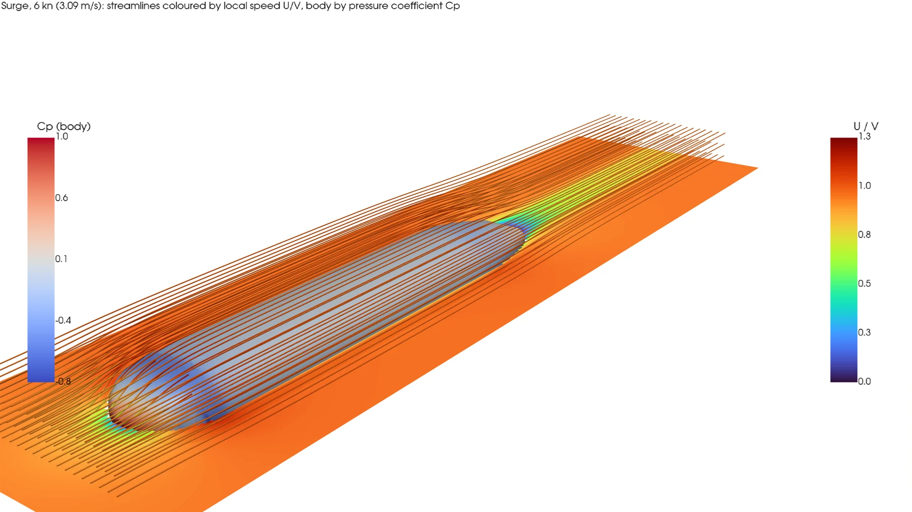<figcaption>Surge 6 kn: 3-D streamlines coloured by U/V over the speed mid-plane; body coloured by pressure coefficient Cp.</figcaption></figure>
          <figure class="fig wide"><video src="assets/vdev_surge_x0.mp4" poster="assets/vdev_surge_x0.webp" autoplay muted loop playsinline controls preload="metadata"></video><figcaption>Surge 6 kn, plane x = 0: how the speed field and flow lines develop after an impulsive start from rest. Illustration from a separate 2-D unsteady RANS run of this mid-plane section; not used for the drag numbers.</figcaption></figure><figure class="fig wide"><video src="assets/vdev_surge_y0.mp4" poster="assets/vdev_surge_y0.webp" autoplay muted loop playsinline controls preload="metadata"></video><figcaption>Surge 6 kn, plane y = 0: how the speed field and flow lines develop after an impulsive start from rest. Illustration from a separate 2-D unsteady RANS run of this mid-plane section; not used for the drag numbers.</figcaption></figure><figure class="fig wide"><video src="assets/vsl_surge_x0.mp4" poster="assets/vsl_surge_x0.webp" autoplay muted loop playsinline controls preload="metadata"></video><figcaption>Surge 6 kn: particles carried by the in-plane velocity on a mid-plane.</figcaption></figure><figure class="fig wide"><video src="assets/vsl_surge_y0.mp4" poster="assets/vsl_surge_y0.webp" autoplay muted loop playsinline controls preload="metadata"></video><figcaption>Surge 6 kn: particles carried by the in-plane velocity on a mid-plane.</figcaption></figure>
          <figure class="fig wide">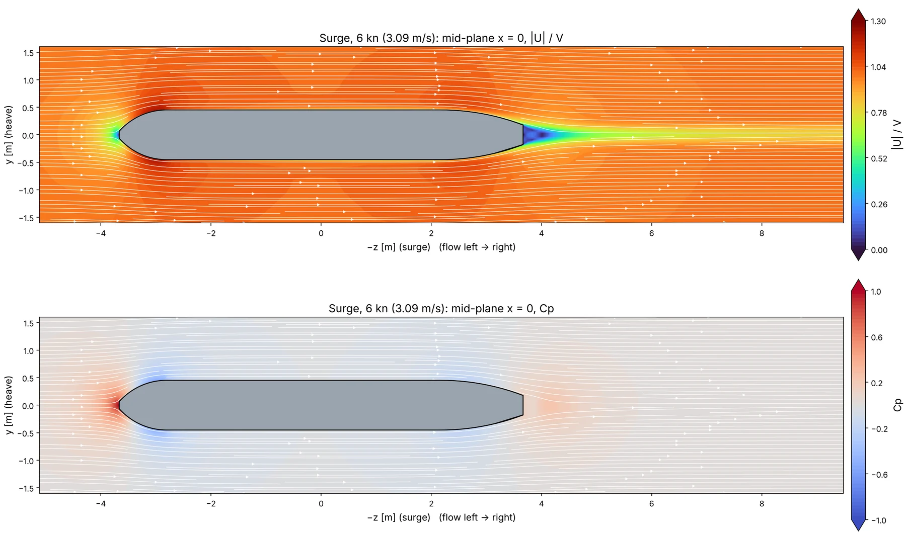<figcaption>Surge 6 kn: mid-plane slice. Top: speed |U|/V with streamlines. Bottom: pressure coefficient Cp.</figcaption></figure><figure class="fig wide">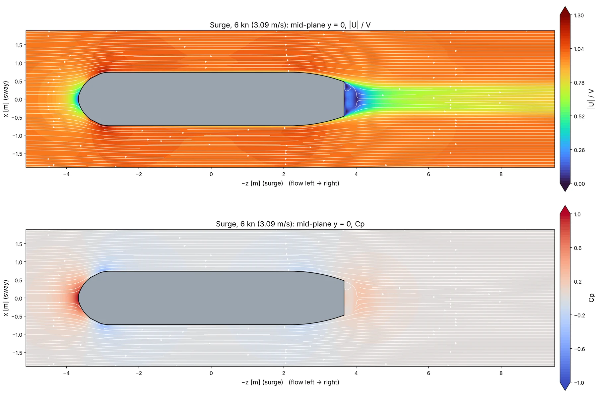<figcaption>Surge 6 kn: mid-plane slice. Top: speed |U|/V with streamlines. Bottom: pressure coefficient Cp.</figcaption></figure>
          <figure class="fig "><video src="assets/vcp_surge.mp4" poster="assets/vcp_surge.webp" autoplay muted loop playsinline controls preload="metadata"></video><figcaption>Surge 6 kn: surface pressure coefficient, rotating view.</figcaption></figure>
          <figure class="fig ">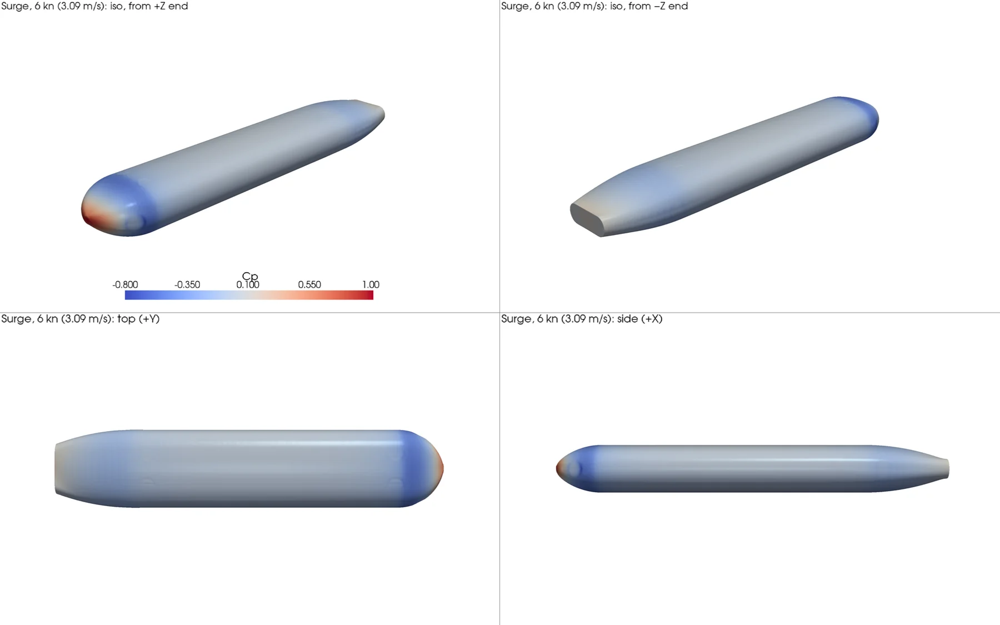<figcaption>Surge 6 kn: surface pressure coefficient Cp, four views.</figcaption></figure>
        </div>
        <p class="note">Rendered from the medium-mesh solution. Particles follow the converged steady (time-averaged) velocity field; they show where water goes on average, not unsteady vortex shedding. The development video is a separate 2-D unsteady run: it shows when and how the wake forms, but a 2-D section cannot give the 3-D drag.</p>
      </div>
      <div class="tabpanel" id="tab-sway" role="tabpanel" aria-labelledby="tb-sway" hidden>
        <div class="grid2">
          <figure class="fig wide"><video src="assets/v3d_sway.mp4" poster="assets/v3d_sway.webp" autoplay muted loop playsinline controls preload="metadata"></video><figcaption>Sway 6 kn: water particles along 3-D streamlines, slowed ×10, coloured by local speed U/V; body coloured by Cp.</figcaption></figure>
          <figure class="fig wide">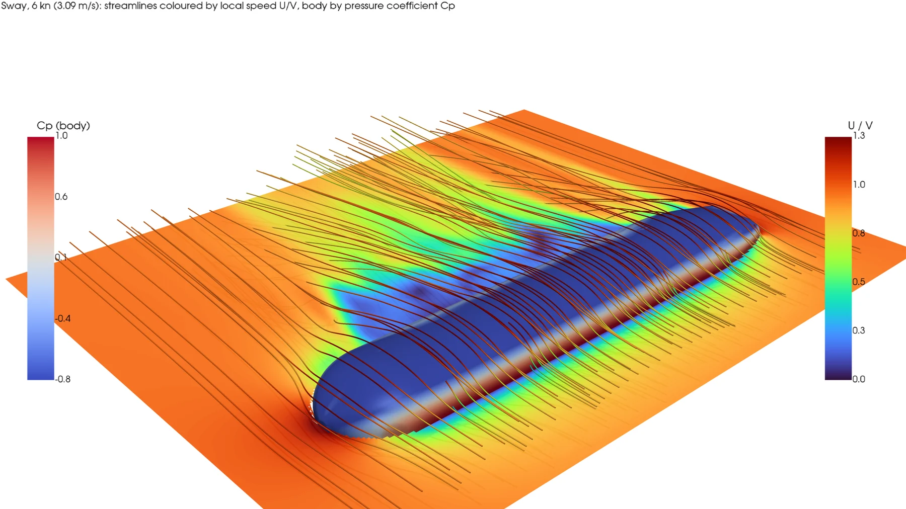<figcaption>Sway 6 kn: 3-D streamlines coloured by U/V over the speed mid-plane; body coloured by pressure coefficient Cp.</figcaption></figure>
          <figure class="fig wide"><video src="assets/vdev_sway_y0.mp4" poster="assets/vdev_sway_y0.webp" autoplay muted loop playsinline controls preload="metadata"></video><figcaption>Sway 6 kn, plane y = 0: how the speed field and flow lines develop after an impulsive start from rest. Illustration from a separate 2-D unsteady RANS run of this mid-plane section; not used for the drag numbers.</figcaption></figure><figure class="fig wide"><video src="assets/vdev_sway_z0.mp4" poster="assets/vdev_sway_z0.webp" autoplay muted loop playsinline controls preload="metadata"></video><figcaption>Sway 6 kn, plane z = 0: how the speed field and flow lines develop after an impulsive start from rest. Illustration from a separate 2-D unsteady RANS run of this mid-plane section; not used for the drag numbers.</figcaption></figure><figure class="fig wide"><video src="assets/vsl_sway_y0.mp4" poster="assets/vsl_sway_y0.webp" autoplay muted loop playsinline controls preload="metadata"></video><figcaption>Sway 6 kn: particles carried by the in-plane velocity on a mid-plane.</figcaption></figure><figure class="fig wide"><video src="assets/vsl_sway_z0.mp4" poster="assets/vsl_sway_z0.webp" autoplay muted loop playsinline controls preload="metadata"></video><figcaption>Sway 6 kn: particles carried by the in-plane velocity on a mid-plane.</figcaption></figure>
          <figure class="fig wide">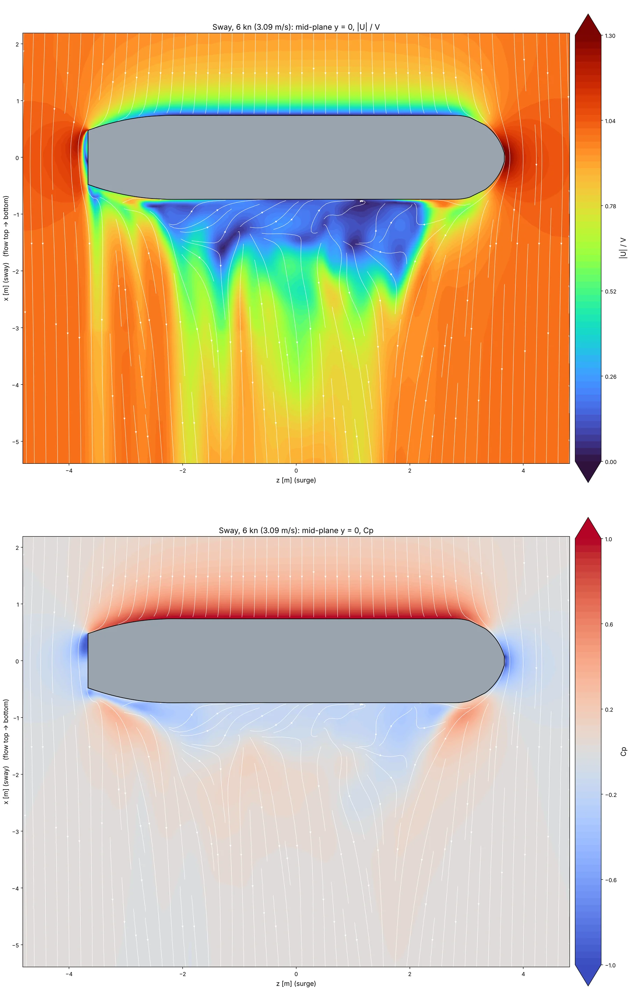<figcaption>Sway 6 kn: mid-plane slice. Top: speed |U|/V with streamlines. Bottom: pressure coefficient Cp.</figcaption></figure><figure class="fig wide">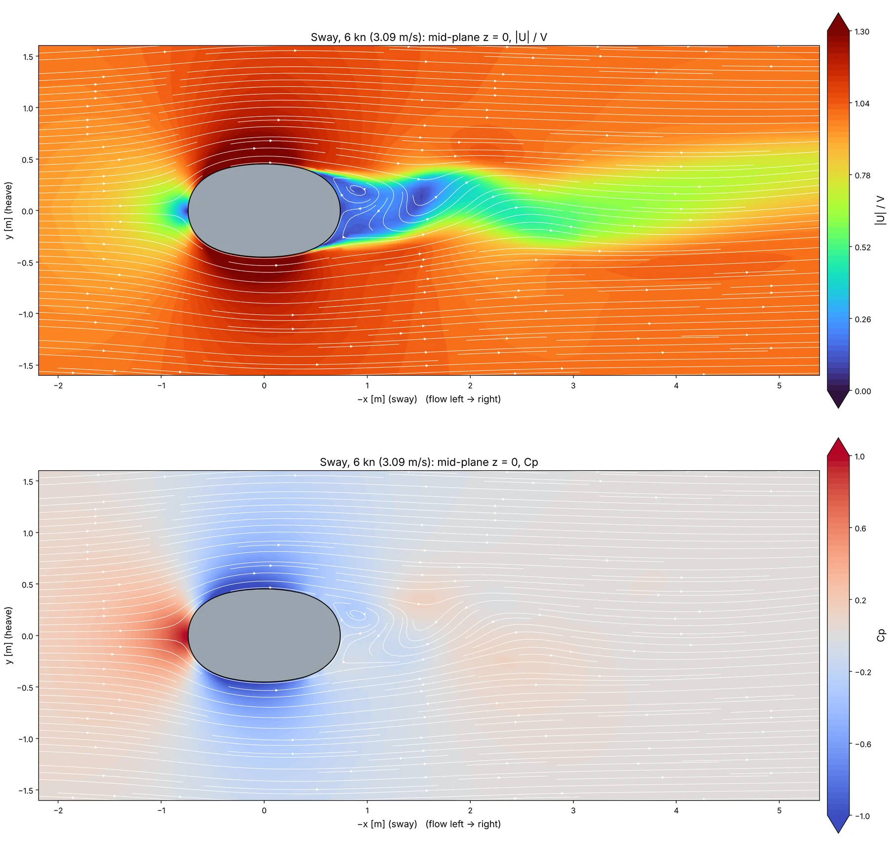<figcaption>Sway 6 kn: mid-plane slice. Top: speed |U|/V with streamlines. Bottom: pressure coefficient Cp.</figcaption></figure>
          <figure class="fig "><video src="assets/vcp_sway.mp4" poster="assets/vcp_sway.webp" autoplay muted loop playsinline controls preload="metadata"></video><figcaption>Sway 6 kn: surface pressure coefficient, rotating view.</figcaption></figure>
          <figure class="fig ">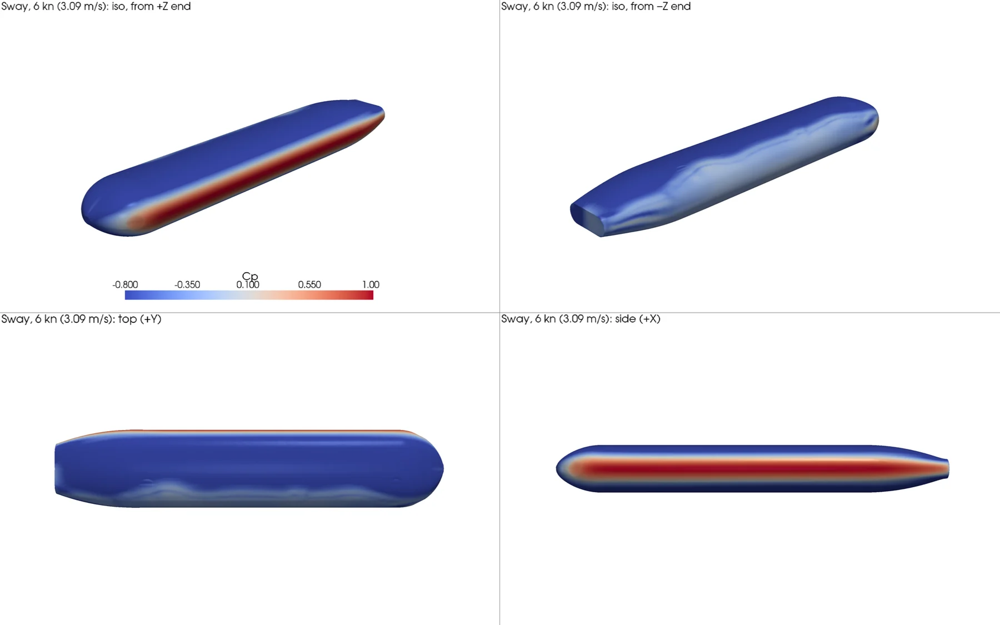<figcaption>Sway 6 kn: surface pressure coefficient Cp, four views.</figcaption></figure>
        </div>
        <p class="note">Rendered from the medium-mesh solution. Particles follow the converged steady (time-averaged) velocity field; they show where water goes on average, not unsteady vortex shedding. The development video is a separate 2-D unsteady run: it shows when and how the wake forms, but a 2-D section cannot give the 3-D drag.</p>
      </div>
      <div class="tabpanel" id="tab-heave" role="tabpanel" aria-labelledby="tb-heave" hidden>
        <div class="grid2">
          <figure class="fig wide"><video src="assets/v3d_heave.mp4" poster="assets/v3d_heave.webp" autoplay muted loop playsinline controls preload="metadata"></video><figcaption>Heave 6 kn: water particles along 3-D streamlines, slowed ×10, coloured by local speed U/V; body coloured by Cp.</figcaption></figure>
          <figure class="fig wide">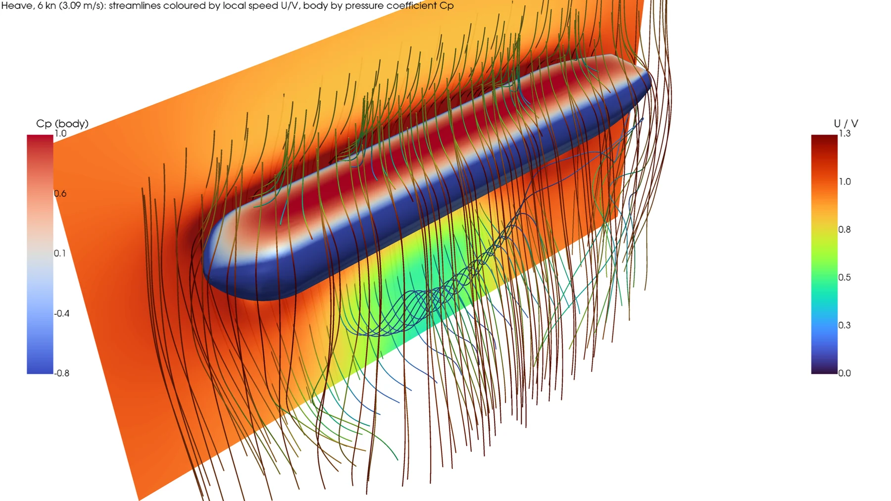<figcaption>Heave 6 kn: 3-D streamlines coloured by U/V over the speed mid-plane; body coloured by pressure coefficient Cp.</figcaption></figure>
          <figure class="fig wide"><video src="assets/vdev_heave_x0.mp4" poster="assets/vdev_heave_x0.webp" autoplay muted loop playsinline controls preload="metadata"></video><figcaption>Heave 6 kn, plane x = 0: how the speed field and flow lines develop after an impulsive start from rest. Illustration from a separate 2-D unsteady RANS run of this mid-plane section; not used for the drag numbers.</figcaption></figure><figure class="fig wide"><video src="assets/vdev_heave_z0.mp4" poster="assets/vdev_heave_z0.webp" autoplay muted loop playsinline controls preload="metadata"></video><figcaption>Heave 6 kn, plane z = 0: how the speed field and flow lines develop after an impulsive start from rest. Illustration from a separate 2-D unsteady RANS run of this mid-plane section; not used for the drag numbers.</figcaption></figure><figure class="fig wide"><video src="assets/vsl_heave_x0.mp4" poster="assets/vsl_heave_x0.webp" autoplay muted loop playsinline controls preload="metadata"></video><figcaption>Heave 6 kn: particles carried by the in-plane velocity on a mid-plane.</figcaption></figure><figure class="fig wide"><video src="assets/vsl_heave_z0.mp4" poster="assets/vsl_heave_z0.webp" autoplay muted loop playsinline controls preload="metadata"></video><figcaption>Heave 6 kn: particles carried by the in-plane velocity on a mid-plane.</figcaption></figure>
          <figure class="fig wide">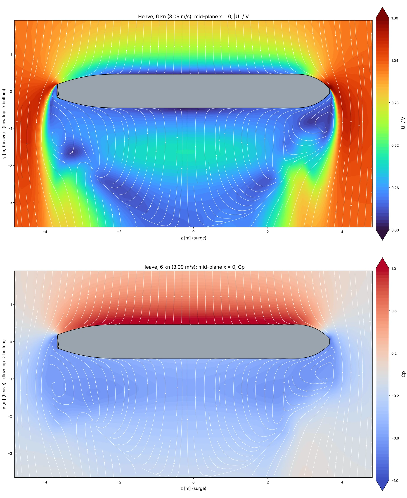<figcaption>Heave 6 kn: mid-plane slice. Top: speed |U|/V with streamlines. Bottom: pressure coefficient Cp.</figcaption></figure><figure class="fig wide">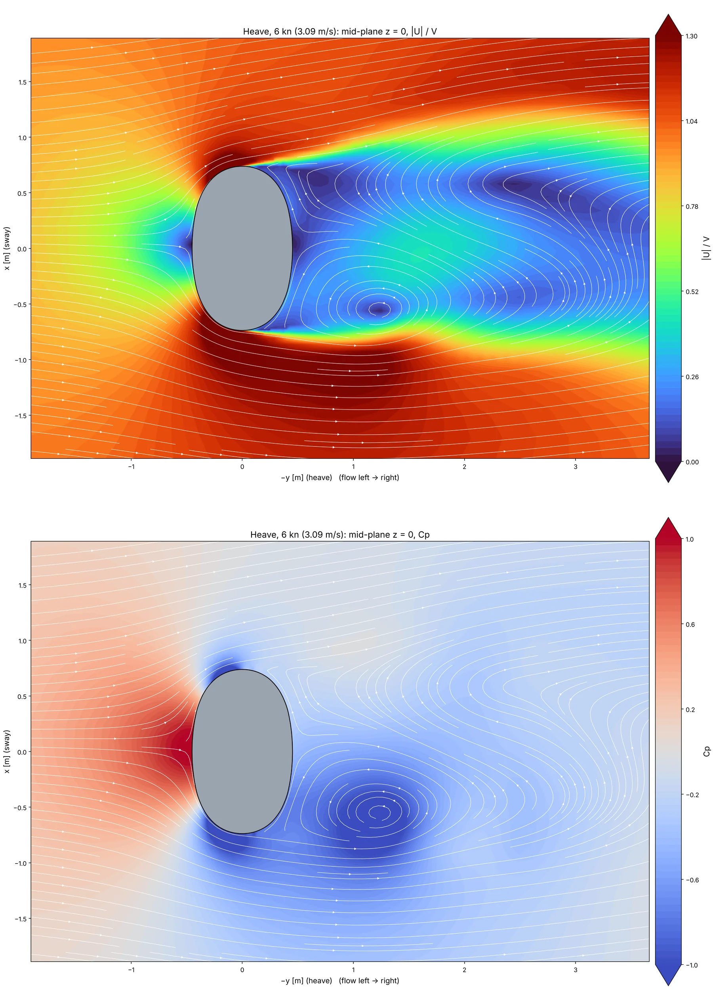<figcaption>Heave 6 kn: mid-plane slice. Top: speed |U|/V with streamlines. Bottom: pressure coefficient Cp.</figcaption></figure>
          <figure class="fig "><video src="assets/vcp_heave.mp4" poster="assets/vcp_heave.webp" autoplay muted loop playsinline controls preload="metadata"></video><figcaption>Heave 6 kn: surface pressure coefficient, rotating view.</figcaption></figure>
          <figure class="fig ">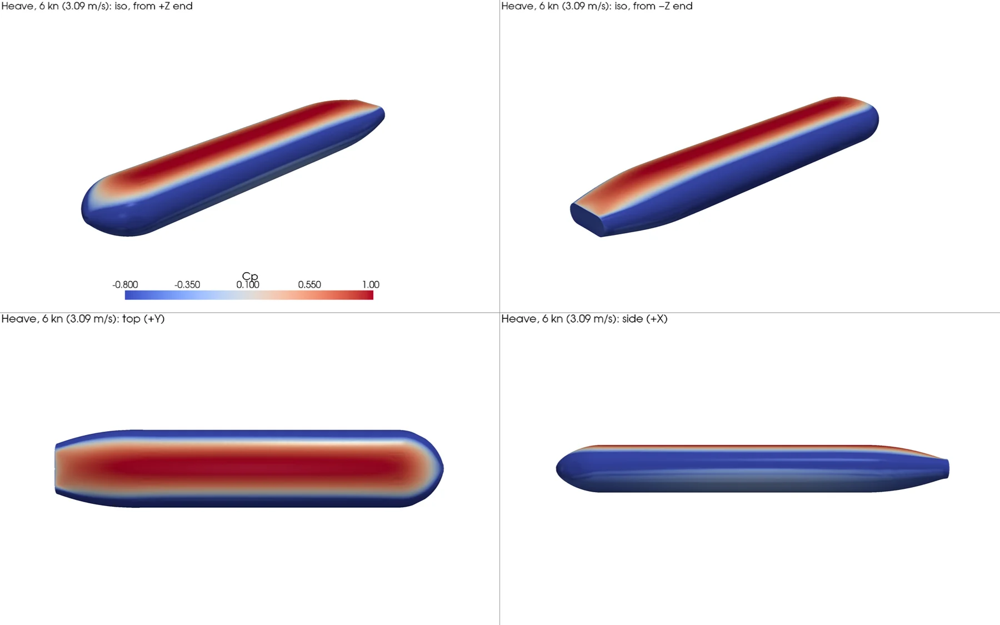<figcaption>Heave 6 kn: surface pressure coefficient Cp, four views.</figcaption></figure>
        </div>
        <p class="note">Rendered from the medium-mesh solution. Particles follow the converged steady (time-averaged) velocity field; they show where water goes on average, not unsteady vortex shedding. The development video is a separate 2-D unsteady run: it shows when and how the wake forms, but a 2-D section cannot give the 3-D drag.</p>
      </div>
</section>

<section id="verification">
  <div class="eyebrow">04 · Verification</div><hr class="rule">
  <h2>Mesh sensitivity, convergence and a friction check</h2>
  <h3>Mesh sensitivity at 6 kn</h3>
  <p>Three mesh levels with the same refinement topology and background cells of 0.64, 0.48 and 0.36 m (body surface cells about 20, 15 and 11 mm, three prism layers). Surge on coarse, medium and fine; sway and heave on coarse and medium. Speed sweeps were run on the coarse mesh and scaled to the finest mesh of each axis at 6 kn (fine for surge, medium for sway and heave).</p>
  <div class="tw"><table><thead><tr><th>Axis</th><th>Mesh</th><th class="num">Cells</th><th class="num">Drag [N]</th><th class="num">Oscillation (1σ)</th><th class="num">Cd</th><th class="num">vs coarse</th></tr></thead><tbody><tr><td>Surge</td><td>coarse</td><td class="num">629,610</td><td class="num">529.3</td><td class="num">±0.2</td><td class="num">0.0976</td><td class="num">–</td></tr><tr><td>Surge</td><td>medium</td><td class="num">1,152,807</td><td class="num">500.6</td><td class="num">±0.5</td><td class="num">0.0923</td><td class="num">-5.4 %</td></tr><tr><td>Surge</td><td>fine</td><td class="num">2,193,511</td><td class="num">486.5</td><td class="num">±0.8</td><td class="num">0.0897</td><td class="num">-8.1 %</td></tr><tr><td>Sway</td><td>coarse</td><td class="num">640,868</td><td class="num">8,363.5</td><td class="num">±159.8</td><td class="num">0.2767</td><td class="num">–</td></tr><tr><td>Sway</td><td>medium</td><td class="num">1,180,835</td><td class="num">8,301.1</td><td class="num">±151.0</td><td class="num">0.2747</td><td class="num">-0.7 %</td></tr><tr><td>Heave</td><td>coarse</td><td class="num">657,677</td><td class="num">35,107.4</td><td class="num">±207.5</td><td class="num">0.6975</td><td class="num">–</td></tr><tr><td>Heave</td><td>medium</td><td class="num">1,213,020</td><td class="num">31,383.7</td><td class="num">±407.1</td><td class="num">0.6235</td><td class="num">-10.6 %</td></tr></tbody></table></div>
  <p>Surge drag at 6 kn on three systematically refined meshes (refinement ratio r = 1.33): 529.3 N (coarse), 500.6 N (medium), 486.5 N (fine). Observed order of convergence p = 2.49; Richardson-extrapolated drag 473.0 N; fine-grid convergence index GCI = 3.5 % (Celik et al. 2008, ASME J. Fluids Eng. 130, 078001).</p>
  <h3>Iterative convergence</h3>
  <p>Surge runs reached the residual targets (p 1e-5; U, k, ω 1e-6) in 520–750 iterations, with a drag oscillation below 0.2 %. Sway and heave never settle completely, because the separated wake is unsteady and a steady solver can only approximate it. They were run for 1300 iterations, and drag is averaged over the last 30 %. The 1σ oscillation is 1–3 %, but in heave at 4 kn the mean drifted by up to 8 % during the run. That drift is the main reason heave uses a constant-Cd fit.</p>
  <h3>Independent friction check (surge)</h3>
  <p>The CFD viscous (skin-friction) drag in surge compared with the ITTC-1957 correlation line, C<sub>F</sub> = 0.075 / (log<sub>10</sub>Re − 2)², × ½ρV²S, with wetted area S = 27.56 m² and Re based on L = 7.33 m.</p>
  <div class="tw"><table><thead><tr><th class="num">Speed [kn]</th><th class="num">C<sub>F</sub> ITTC</th><th class="num">ITTC friction [N]</th><th class="num">CFD viscous [N]</th><th class="num">Difference</th></tr></thead><tbody><tr><td class="num">1</td><td class="num">0.00370</td><td class="num">13.8</td><td class="num">13.0</td><td class="num">-6.1 %</td></tr><tr><td class="num">2</td><td class="num">0.00325</td><td class="num">48.7</td><td class="num">46.0</td><td class="num">-5.5 %</td></tr><tr><td class="num">4</td><td class="num">0.00288</td><td class="num">172.3</td><td class="num">164.6</td><td class="num">-4.5 %</td></tr><tr><td class="num">6</td><td class="num">0.00269</td><td class="num">362.3</td><td class="num">348.3</td><td class="num">-3.9 %</td></tr><tr><td class="num">6 (medium)</td><td class="num">0.00269</td><td class="num">362.3</td><td class="num">347.3</td><td class="num">-4.1 %</td></tr><tr><td class="num">6 (fine)</td><td class="num">0.00269</td><td class="num">362.3</td><td class="num">348.0</td><td class="num">-4.0 %</td></tr></tbody></table></div>
  <h3>All CFD runs</h3>
  <div class="tw"><table><thead><tr><th>Axis</th><th>Mesh</th><th class="num">kn</th><th class="num">Re</th><th class="num">Drag [N]</th><th class="num">Pressure [N]</th><th class="num">Viscous [N]</th><th class="num">Cd</th><th class="num">Iter.</th></tr></thead><tbody><tr><td>Surge</td><td>coarse</td><td class="num">1</td><td class="num">3.17e+06</td><td class="num">18.0</td><td class="num">5.0</td><td class="num">13.0</td><td class="num">0.1194</td><td class="num">524</td></tr><tr><td>Surge</td><td>coarse</td><td class="num">2</td><td class="num">6.35e+06</td><td class="num">65.9</td><td class="num">19.9</td><td class="num">46.0</td><td class="num">0.1094</td><td class="num">527</td></tr><tr><td>Surge</td><td>coarse</td><td class="num">4</td><td class="num">1.27e+07</td><td class="num">244.6</td><td class="num">80.0</td><td class="num">164.6</td><td class="num">0.1015</td><td class="num">532</td></tr><tr><td>Surge</td><td>coarse</td><td class="num">6</td><td class="num">1.90e+07</td><td class="num">529.3</td><td class="num">181.0</td><td class="num">348.3</td><td class="num">0.0976</td><td class="num">537</td></tr><tr><td>Surge</td><td>medium</td><td class="num">6</td><td class="num">1.90e+07</td><td class="num">500.6</td><td class="num">153.3</td><td class="num">347.3</td><td class="num">0.0923</td><td class="num">622</td></tr><tr><td>Surge</td><td>fine</td><td class="num">6</td><td class="num">1.90e+07</td><td class="num">486.5</td><td class="num">138.5</td><td class="num">348.0</td><td class="num">0.0897</td><td class="num">749</td></tr><tr><td>Sway</td><td>coarse</td><td class="num">1</td><td class="num">6.41e+05</td><td class="num">247.1</td><td class="num">231.1</td><td class="num">16.0</td><td class="num">0.2943</td><td class="num">1300</td></tr><tr><td>Sway</td><td>coarse</td><td class="num">2</td><td class="num">1.28e+06</td><td class="num">981.0</td><td class="num">924.8</td><td class="num">56.2</td><td class="num">0.2921</td><td class="num">1300</td></tr><tr><td>Sway</td><td>coarse</td><td class="num">4</td><td class="num">2.56e+06</td><td class="num">3,811.6</td><td class="num">3,610.1</td><td class="num">201.5</td><td class="num">0.2838</td><td class="num">1300</td></tr><tr><td>Sway</td><td>coarse</td><td class="num">6</td><td class="num">3.84e+06</td><td class="num">8,363.5</td><td class="num">7,936.6</td><td class="num">426.8</td><td class="num">0.2767</td><td class="num">1300</td></tr><tr><td>Sway</td><td>medium</td><td class="num">6</td><td class="num">3.84e+06</td><td class="num">8,301.1</td><td class="num">7,860.7</td><td class="num">440.4</td><td class="num">0.2747</td><td class="num">1300</td></tr><tr><td>Heave</td><td>coarse</td><td class="num">1</td><td class="num">3.91e+05</td><td class="num">962.2</td><td class="num">953.3</td><td class="num">9.0</td><td class="num">0.6882</td><td class="num">1300</td></tr><tr><td>Heave</td><td>coarse</td><td class="num">2</td><td class="num">7.83e+05</td><td class="num">3,693.4</td><td class="num">3,661.1</td><td class="num">32.3</td><td class="num">0.6604</td><td class="num">1300</td></tr><tr><td>Heave</td><td>coarse</td><td class="num">4</td><td class="num">1.57e+06</td><td class="num">14,025.2</td><td class="num">13,909.2</td><td class="num">116.0</td><td class="num">0.6270</td><td class="num">1300</td></tr><tr><td>Heave</td><td>coarse</td><td class="num">6</td><td class="num">2.35e+06</td><td class="num">35,107.4</td><td class="num">34,852.6</td><td class="num">254.8</td><td class="num">0.6975</td><td class="num">1300</td></tr><tr><td>Heave</td><td>medium</td><td class="num">6</td><td class="num">2.35e+06</td><td class="num">31,383.7</td><td class="num">31,137.6</td><td class="num">246.1</td><td class="num">0.6235</td><td class="num">1300</td></tr></tbody></table></div>
  <p class="note">Re uses the body length along the motion axis: 7.33 m (surge), 1.48 m (sway), 0.90 m (heave). Cd uses the projected area normal to motion: 1.11 m² (surge), 6.18 m² (sway), 10.30 m² (heave).</p>
</section>

<section id="yplus">
  <div class="eyebrow">05 · Wall resolution</div><hr class="rule">
  <h2>y+ on the body</h2>
  <p>y+ is the non-dimensional height of the first cell centre above the wall. Wall functions are designed for 30 &lt; y+ &lt; 300. The Spalding wall function used here (nutUSpaldingWallFunction) follows one continuous law of the wall, so it also remains valid in the buffer layer (5–30). Values are area-weighted. The coarse mesh covers the speed sweeps; at 6 kn the finer meshes bring 93–99.5 % of the surface into the 30–300 range (heave medium 80 %).</p>
  <div class="tw"><table><thead><tr><th>Axis</th><th>Mesh</th><th class="num">kn</th><th class="num">Mean y+</th><th class="num">5–95 % range</th><th class="num">% area 5–30</th><th class="num">% area 30–300</th><th class="num">% area &gt; 300</th></tr></thead><tbody><tr><td>Surge</td><td>coarse</td><td class="num">1</td><td class="num">43.7</td><td class="num">34.3–63.3</td><td class="num">3.1</td><td class="num">96.9</td><td class="num">0.0</td></tr><tr><td>Surge</td><td>coarse</td><td class="num">2</td><td class="num">82.2</td><td class="num">65.8–117.8</td><td class="num">1.5</td><td class="num">98.5</td><td class="num">0.0</td></tr><tr><td>Surge</td><td>coarse</td><td class="num">4</td><td class="num">155.5</td><td class="num">126.6–220.6</td><td class="num">0.4</td><td class="num">99.6</td><td class="num">0.0</td></tr><tr><td>Surge</td><td>coarse</td><td class="num">6</td><td class="num">226.2</td><td class="num">185.5–318.9</td><td class="num">0.1</td><td class="num">92.6</td><td class="num">7.3</td></tr><tr><td>Surge</td><td>medium</td><td class="num">6</td><td class="num">169.6</td><td class="num">138.1–238.2</td><td class="num">0.3</td><td class="num">99.7</td><td class="num">0.0</td></tr><tr><td>Surge</td><td>fine</td><td class="num">6</td><td class="num">127.4</td><td class="num">102.9–176.2</td><td class="num">0.5</td><td class="num">99.5</td><td class="num">0.0</td></tr><tr><td>Sway</td><td>coarse</td><td class="num">1</td><td class="num">50.8</td><td class="num">11.2–78.3</td><td class="num">22.0</td><td class="num">77.8</td><td class="num">0.0</td></tr><tr><td>Sway</td><td>coarse</td><td class="num">2</td><td class="num">94.4</td><td class="num">19.5–145.7</td><td class="num">11.4</td><td class="num">88.5</td><td class="num">0.0</td></tr><tr><td>Sway</td><td>coarse</td><td class="num">4</td><td class="num">179.3</td><td class="num">38.6–271.7</td><td class="num">2.7</td><td class="num">97.3</td><td class="num">0.0</td></tr><tr><td>Sway</td><td>coarse</td><td class="num">6</td><td class="num">259.0</td><td class="num">49.7–392.8</td><td class="num">1.7</td><td class="num">49.5</td><td class="num">48.7</td></tr><tr><td>Sway</td><td>medium</td><td class="num">6</td><td class="num">198.4</td><td class="num">47.4–299.7</td><td class="num">1.7</td><td class="num">93.5</td><td class="num">4.8</td></tr><tr><td>Heave</td><td>coarse</td><td class="num">1</td><td class="num">38.8</td><td class="num">11.9–91.6</td><td class="num">57.9</td><td class="num">41.9</td><td class="num">0.0</td></tr><tr><td>Heave</td><td>coarse</td><td class="num">2</td><td class="num">71.3</td><td class="num">19.7–171.7</td><td class="num">23.6</td><td class="num">76.3</td><td class="num">0.0</td></tr><tr><td>Heave</td><td>coarse</td><td class="num">4</td><td class="num">133.0</td><td class="num">31.4–323.5</td><td class="num">4.4</td><td class="num">83.6</td><td class="num">12.0</td></tr><tr><td>Heave</td><td>coarse</td><td class="num">6</td><td class="num">216.2</td><td class="num">53.9–467.0</td><td class="num">1.2</td><td class="num">71.1</td><td class="num">27.7</td></tr><tr><td>Heave</td><td>medium</td><td class="num">6</td><td class="num">143.9</td><td class="num">34.7–352.1</td><td class="num">3.7</td><td class="num">80.1</td><td class="num">16.3</td></tr></tbody></table></div>
  <div class="grid3"><figure class="fig ">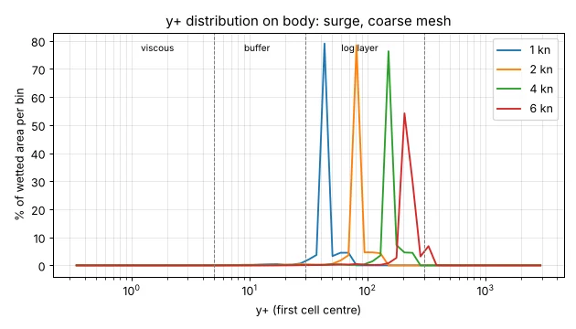<figcaption>Surge: area-weighted y+ distribution, coarse mesh, 1–6 kn.</figcaption></figure><figure class="fig ">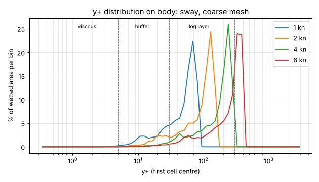<figcaption>Sway: area-weighted y+ distribution, coarse mesh, 1–6 kn.</figcaption></figure><figure class="fig ">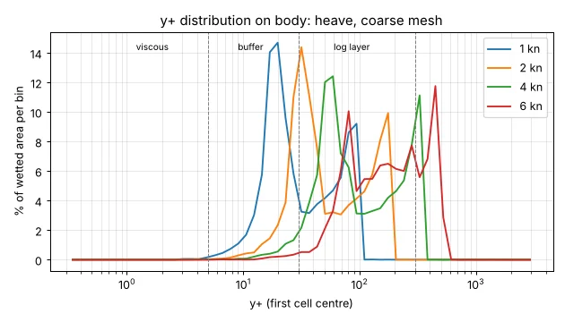<figcaption>Heave: area-weighted y+ distribution, coarse mesh, 1–6 kn.</figcaption></figure></div>
  <div class="grid3" style="margin-top:12px"><figure class="fig ">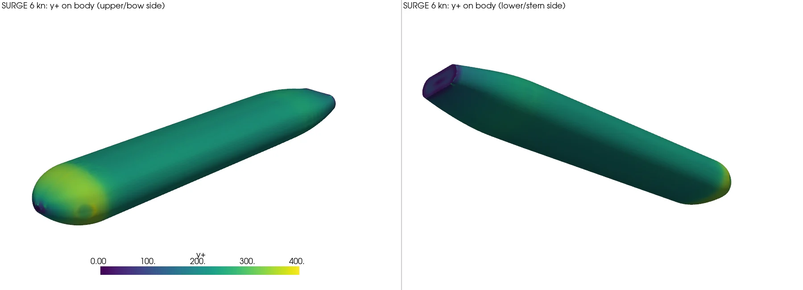<figcaption>Surge 6 kn: y+ on the body, coarse mesh.</figcaption></figure><figure class="fig ">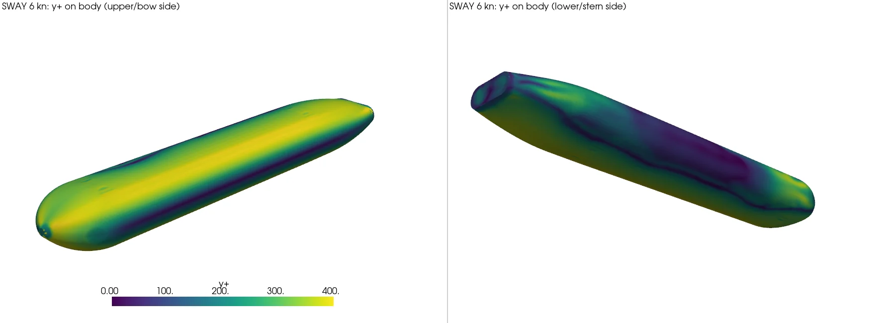<figcaption>Sway 6 kn: y+ on the body, coarse mesh.</figcaption></figure><figure class="fig ">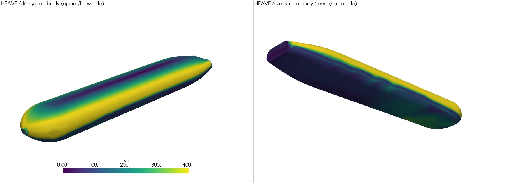<figcaption>Heave 6 kn: y+ on the body, coarse mesh.</figcaption></figure></div>
</section>

<section id="method">
  <div class="eyebrow">06 · Method</div><hr class="rule">
  <h2>Geometry, mesh and solver set-up</h2>
  <h3>Geometry sealing</h3>
  <p>The supplied STL is an assembly of 294 thin panels (2 mm skin) with open ends, ~300 mm side cut-outs near both ends, and through-holes. As instructed, all openings were treated as closed (blind). The body was sliced every 10 mm along Z, and the outer skin radius was taken in 240 angular bins per slice. Bins with no skin (2.3 % of the surface) were interpolated from neighbouring slices, and both ends were capped flat. The result is a watertight envelope: 7.23 m³, wetted area 27.56 m², matching the CAD bounding box within 1 mm.</p>
  <div class="grid2">
    <figure class="fig wide">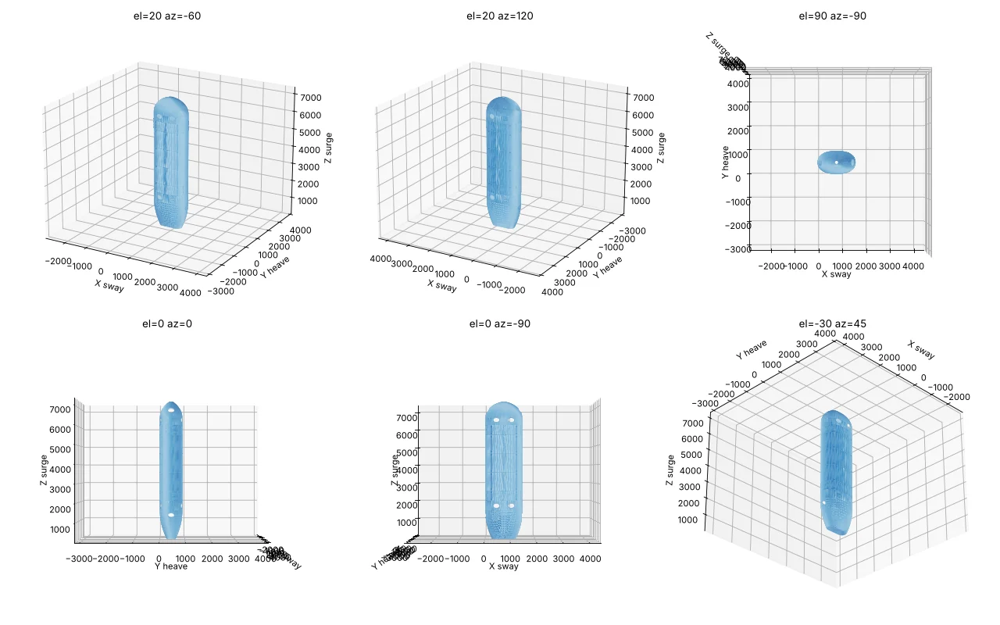<figcaption>Supplied CAD shell (mm). Panel assembly with holes and open ends.</figcaption></figure>
    <figure class="fig">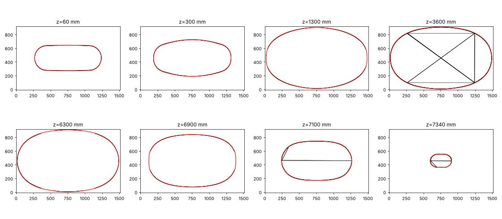<figcaption>Cross-sections along Z: original skin (black) vs sealed envelope (red).</figcaption></figure>
    <figure class="fig">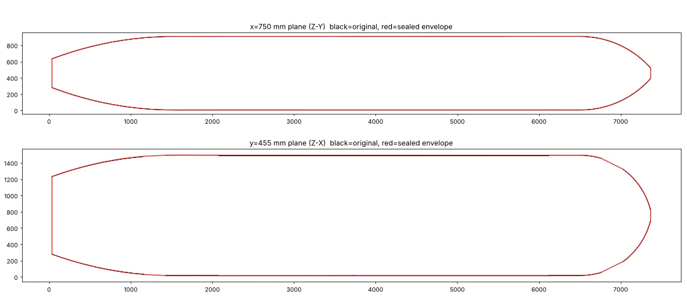<figcaption>Longitudinal sections: openings bridged, ends capped flat.</figcaption></figure>
  </div>
  <h3>Domain, mesh and physics</h3>
  <div class="tw"><table><tbody>
    <tr><td>Body axes</td><td>Z = surge, X = sway, Y = heave (CAD frame). Motion in +Z, +X, +Y; free stream U = −V·ê in the body frame.</td></tr>
    <tr><td>Domain</td><td>Box: 1.5 L or 8 m upstream (whichever larger), 3 L or 15 m downstream, 6 m beyond the body laterally. Blockage 0.6 % (surge), 2.3 % (sway), 3.7 % (heave).</td></tr>
    <tr><td>Mesh</td><td>snappyHexMesh, hex-dominant. Body surface refinement level 5, feature edges level 6, near-body box level 2, wake box level 3, 3 prism layers (expansion 1.2). Surge cells: 629,610 (coarse), 1,152,807 (medium), 2,193,511 (fine). checkMesh "Mesh OK" for every mesh; layer coverage above 98.9 %.</td></tr>
    <tr><td>Solver</td><td>OpenFOAM v2512 simpleFoam (steady, incompressible, SIMPLEC). k-ω SST turbulence model. Second-order linear-upwind convection for U, first-order upwind for k and ω.</td></tr>
    <tr><td>Boundary conditions</td><td>Inlet: fixed velocity, turbulence intensity 1 %, eddy-viscosity ratio 10. Outlet: p = 0, inletOutlet. Sides: slip. Body: no-slip, nutUSpaldingWallFunction, kqRWallFunction, omegaWallFunction.</td></tr>
    <tr><td>Fluid</td><td>Sea water 15 °C, 35 g/kg: ρ = 1025.9 kg/m³, ν = 1.1883×10⁻⁶ m²/s (ITTC Recommended Procedure 7.5-02-01-03, 2011).</td></tr>
    <tr><td>Forces</td><td>Pressure + viscous force on the body, every iteration (forces function object). Drag = force component along the free stream, averaged over the last 30 % of iterations.</td></tr>
    <tr><td>Compute</td><td>4 CPU cores, 4 MPI ranks. Coarse runs 10–30 min, medium about 1 h each.</td></tr>
  </tbody></table></div>
</section>

<section id="assumptions">
  <div class="eyebrow">07 · Assumptions</div><hr class="rule">
  <h2>Assumptions and their effect on the result</h2>
  <div class="tw"><table><thead><tr><th>#</th><th>Assumption</th><th>Why, and effect on the numbers</th></tr></thead><tbody>
    <tr><td class="num">A1</td><td>All openings, holes and both open ends are closed (blind), flush with the surrounding skin; ends capped flat.</td><td>Your instruction. Real open holes add internal-flow and cavity drag, which is not captured.</td></tr>
    <tr><td class="num">A2</td><td>The outer surface between known skin is interpolated (2.3 % of the area), including the ~300 mm side cut-outs.</td><td>The CAD has no skin there; a smooth bridge is the neutral choice.</td></tr>
    <tr><td class="num">A3</td><td>Features below about 20 mm (panel joints, fasteners) are smoothed out.</td><td>Below mesh resolution. Such features usually add a few percent of drag.</td></tr>
    <tr><td class="num">A4</td><td>Fully submerged and deep, far from the free surface, seabed and walls.</td><td>Your instruction. No wave-making drag. Valid for depth greater than about 3× body height.</td></tr>
    <tr><td class="num">A5</td><td>Standard sea water at 15 °C, 35 g/kg (ρ 1025.9 kg/m³, ν 1.1883×10⁻⁶ m²/s, ITTC 7.5-02-01-03).</td><td>Your instruction. Drag scales with ρ; the friction part changes about 2–3 % per 5 °C.</td></tr>
    <tr><td class="num">A6</td><td>Steady speed, pure translation along one axis at a time.</td><td>No combined motion, drift angle or acceleration; added mass is not included.</td></tr>
    <tr><td class="num">A7</td><td>Motion directions +Z, +X, +Y; the rounded high-Z end is the bow.</td><td>Sway and heave are close to symmetric. Surge in reverse (blunt flat stern first) would give more drag.</td></tr>
    <tr><td class="num">A8</td><td>Steady RANS, k-ω SST with wall functions.</td><td>Industry standard at Re 10⁵–10⁷. Typical accuracy ±5–10 % for attached flow and ±15–30 % for separated bluff-body flow.</td></tr>
    <tr><td class="num">A9</td><td>Fully turbulent boundary layer from the leading edge.</td><td>No transition model. It may over-predict friction slightly at 1 kn.</td></tr>
    <tr><td class="num">A10</td><td>Hydraulically smooth surface, no fouling.</td><td>Fouling can add 10–50 % or more to friction drag. Add a margin for service conditions.</td></tr>
    <tr><td class="num">A11</td><td>Inflow turbulence intensity 1 %, eddy-viscosity ratio 10.</td><td>Calm, tow-tank-like water; small effect on drag.</td></tr>
    <tr><td class="num">A12</td><td>Sway and heave wakes are unsteady; reported drag is the time average of the steady solver's iterations.</td><td>Captures the mean drag only approximately. Shedding forces need URANS or DES.</td></tr>
    <tr><td class="num">A13</td><td>Hydraulic power = drag × speed.</td><td>Power delivered to the water. Shaft or electrical power = P ÷ (propulsive × motor efficiency).</td></tr>
    <tr><td class="num">A14</td><td>Intermediate speeds come from a Cd fit through the 1, 2, 4 and 6 kn runs.</td><td>Cd varies smoothly and weakly with Re at these Re. Heave uses a constant mean Cd.</td></tr>
    <tr><td class="num">A15</td><td>Speed sweeps on the coarse mesh, scaled to the finest mesh of each axis at 6 kn (fine for surge, medium for sway and heave).</td><td>Limited by the 4-core machine. The mesh spread is reported as discretisation uncertainty.</td></tr>
    <tr><td class="num">A16</td><td>Domain blockage 0.6–3.7 % with slip side walls, uncorrected.</td><td>May over-predict sway and heave drag by a few percent.</td></tr>
    <tr><td class="num">A17</td><td>Body only: no thrusters, appendages, tether or interaction effects.</td><td>Not present in the supplied CAD.</td></tr>
  </tbody></table></div>
</section>

<section id="uncertainty">
  <div class="eyebrow">08 · Uncertainty</div><hr class="rule">
  <h2>How far to trust each number</h2>
  <div class="tw"><table><thead><tr><th>Axis</th><th>Numerical (measured here)</th><th>Model form (engineering judgement)</th><th>Use the result as</th></tr></thead><tbody>
    <tr><td><span class="sw" style="background:var(--s-surge)"></span>Surge</td><td>Fine-grid convergence index about 3.5 % (three meshes, monotonic); iterative below 0.2 %; friction within a few % of ITTC-1957.</td><td>Attached flow, well suited to RANS: about ±10 %.</td><td>Design value; add a fouling and appendage margin.</td></tr>
    <tr><td><span class="sw" style="background:var(--s-sway)"></span>Sway</td><td>Mesh spread about 1 %; oscillation 1–2 %; Cd varies 6 % across speeds.</td><td>Separated bluff-body wake, steady RANS: about ±20 %.</td><td>Sizing estimate; confirm with a tow or URANS test if critical.</td></tr>
    <tr><td><span class="sw" style="background:var(--s-heave)"></span>Heave</td><td>Mesh spread about 7–11 %; mean drift up to 8 %; Cd scatter ±5 %.</td><td>Large separated wake behind a broad face: about ±25 %.</td><td>Sizing estimate; most uncertain axis.</td></tr>
  </tbody></table></div>
  <p class="note">Numerical figures come from the runs in this report. Model-form ranges are typical published accuracies for steady RANS on attached and separated flows, not measured here; a single tow or drop test per axis is the cheapest way to calibrate them.</p>
</section>

<section id="files">
  <div class="eyebrow">09 · Files</div><hr class="rule">
  <h2>Source code and data</h2>
  <p>Everything is in the repository <span class="num">torquenomad/as-cfd</span>, branch <span class="num">claude/nifty-meitner-f1g36x</span>.</p>
  <div class="tw"><table><tbody>
    <tr><td class="num">docs/METHODOLOGY.md</td><td>Full method, code walkthrough and assumptions.</td></tr>
    <tr><td class="num">geometry/</td><td>Original STL and the sealed envelope used for CFD.</td></tr>
    <tr><td class="num">scripts/make_envelope.py</td><td>Seals the shell: slices, outer-radius grid, interpolation, end caps.</td></tr>
    <tr><td class="num">scripts/setup_case.py, mesh_case.sh, run_case.sh</td><td>Write, mesh and run one OpenFOAM case (axis, mesh level, speed).</td></tr>
    <tr><td class="num">scripts/run_all.py, campaign.sh</td><td>The batch of runs executed for this report.</td></tr>
    <tr><td class="num">scripts/postprocess.py, yplus_report.py</td><td>Forces to drag, power, Cd, fits and tables; y+ statistics.</td></tr>
    <tr><td class="num">scripts/visualize.py, animate.py, build_report.py</td><td>Flow images, animations and this page.</td></tr>
    <tr><td class="num">openfoam_case_example/</td><td>Complete OpenFOAM dictionaries of the surge 6 kn case.</td></tr>
    <tr><td class="num">results/</td><td>CSV and JSON tables, figures and animations.</td></tr>
  </tbody></table></div>
  <footer>MCS · Innovation Department · Shell hydrodynamic drag · 19 Oct 2026 · Generated from the CFD results by scripts/build_report.py</footer>
</section>
</main>

<script>
(() => {
  const DATA = {"curves": {"surge": {"kn": [0.0, 0.1, 0.2, 0.3, 0.4, 0.5, 0.6, 0.7, 0.8, 0.9, 1.0, 1.1, 1.2, 1.3, 1.4, 1.5, 1.6, 1.7, 1.8, 1.9, 2.0, 2.1, 2.2, 2.3, 2.4, 2.5, 2.6, 2.7, 2.8, 2.9, 3.0, 3.1, 3.2, 3.3, 3.4, 3.5, 3.6, 3.7, 3.8, 3.9, 4.0, 4.1, 4.2, 4.3, 4.4, 4.5, 4.6, 4.7, 4.8, 4.9, 5.0, 5.1, 5.2, 5.3, 5.4, 5.5, 5.6, 5.7, 5.8, 5.9, 6.0], "D": [0.0, 0.2, 0.77, 1.67, 2.9, 4.43, 6.27, 8.41, 10.84, 13.55, 16.55, 19.84, 23.39, 27.23, 31.33, 35.7, 40.34, 45.24, 50.41, 55.83, 61.51, 67.45, 73.65, 80.1, 86.8, 93.75, 100.95, 108.4, 116.09, 124.03, 132.21, 140.64, 149.31, 158.22, 167.37, 176.75, 186.38, 196.24, 206.34, 216.67, 227.24, 238.03, 249.07, 260.33, 271.82, 283.55, 295.5, 307.68, 320.09, 332.73, 345.59, 358.68, 371.99, 385.53, 399.29, 413.27, 427.48, 441.9, 456.55, 471.42, 486.51], "pts": [[1.0, 16.646616221252366], [2.0, 60.991783827767435], [4.0, 226.3562010783399], [6.0, 489.79697943576406]]}, "sway": {"kn": [0.0, 0.1, 0.2, 0.3, 0.4, 0.5, 0.6, 0.7, 0.8, 0.9, 1.0, 1.1, 1.2, 1.3, 1.4, 1.5, 1.6, 1.7, 1.8, 1.9, 2.0, 2.1, 2.2, 2.3, 2.4, 2.5, 2.6, 2.7, 2.8, 2.9, 3.0, 3.1, 3.2, 3.3, 3.4, 3.5, 3.6, 3.7, 3.8, 3.9, 4.0, 4.1, 4.2, 4.3, 4.4, 4.5, 4.6, 4.7, 4.8, 4.9, 5.0, 5.1, 5.2, 5.3, 5.4, 5.5, 5.6, 5.7, 5.8, 5.9, 6.0], "D": [0.0, 2.64, 10.33, 22.94, 40.41, 62.69, 89.74, 121.54, 158.05, 199.26, 245.14, 295.68, 350.87, 410.69, 475.12, 544.16, 617.79, 696.0, 778.79, 866.14, 958.04, 1054.49, 1155.48, 1261.01, 1371.05, 1485.61, 1604.69, 1728.26, 1856.34, 1988.9, 2125.96, 2267.49, 2413.5, 2563.98, 2718.92, 2878.33, 3042.19, 3210.5, 3383.26, 3560.46, 3742.09, 3928.17, 4118.67, 4313.6, 4512.95, 4716.72, 4924.9, 5137.49, 5354.5, 5575.9, 5801.71, 6031.92, 6266.52, 6505.51, 6748.89, 6996.65, 7248.8, 7505.33, 7766.23, 8031.51, 8301.16], "pts": [[1.0, 243.55349318861963], [2.0, 967.0043195648946], [4.0, 3757.088610016479], [6.0, 8243.798529521084]]}, "heave": {"kn": [0.0, 0.1, 0.2, 0.3, 0.4, 0.5, 0.6, 0.7, 0.8, 0.9, 1.0, 1.1, 1.2, 1.3, 1.4, 1.5, 1.6, 1.7, 1.8, 1.9, 2.0, 2.1, 2.2, 2.3, 2.4, 2.5, 2.6, 2.7, 2.8, 2.9, 3.0, 3.1, 3.2, 3.3, 3.4, 3.5, 3.6, 3.7, 3.8, 3.9, 4.0, 4.1, 4.2, 4.3, 4.4, 4.5, 4.6, 4.7, 4.8, 4.9, 5.0, 5.1, 5.2, 5.3, 5.4, 5.5, 5.6, 5.7, 5.8, 5.9, 6.0], "D": [0.0, 8.72, 34.87, 78.46, 139.48, 217.94, 313.84, 427.17, 557.93, 706.13, 871.77, 1054.84, 1255.34, 1473.29, 1708.66, 1961.48, 2231.72, 2519.41, 2824.53, 3147.08, 3487.07, 3844.49, 4219.35, 4611.65, 5021.38, 5448.55, 5893.15, 6355.18, 6834.66, 7331.56, 7845.91, 8377.68, 8926.9, 9493.55, 10077.63, 10679.15, 11298.1, 11934.49, 12588.32, 13259.58, 13948.28, 14654.41, 15377.98, 16118.98, 16877.42, 17653.29, 18446.6, 19257.34, 20085.52, 20931.13, 21794.18, 22674.67, 23572.59, 24487.94, 25420.74, 26370.96, 27338.62, 28323.72, 29326.25, 30346.22, 31383.62], "pts": [[1.0, 897.7874235249211], [2.0, 3446.077069099874], [4.0, 13085.996863161714], [6.0, 32756.34688986692]]}}, "rho": 1025.9};
  const AX = ['surge', 'sway', 'heave'], NAME = { surge: 'Surge', sway: 'Sway', heave: 'Heave' };
  const KN = 0.514444;
  const svg = document.getElementById('chart'), tip = document.getElementById('tip'), cw = document.getElementById('cw');
  const W = 1000, H = 440, m = { l: 78, r: 70, t: 16, b: 46 };
  let q = 'D', scale = 'log';
  const col = a => getComputedStyle(document.documentElement).getPropertyValue('--s-' + a).trim();
  const val = (a, i) => { const d = DATA.curves[a].D[i], k = DATA.curves[a].kn[i]; return q === 'D' ? d : d * k * KN; };
  const fmt = v => v >= 1000 ? (v / 1000).toLocaleString('en', { maximumFractionDigits: 1 }) + 'k' : v.toLocaleString('en', { maximumFractionDigits: 1 });
  const NS = 'http://www.w3.org/2000/svg';
  const el = (t, at, p) => { const e = document.createElementNS(NS, t); for (const k in at) e.setAttribute(k, at[k]); (p || svg).appendChild(e); return e; };
  function draw() {
    svg.innerHTML = '';
    const unit = q === 'D' ? 'Drag [N]' : 'Hydraulic power [W]';
    let ymax = 0; AX.forEach(a => DATA.curves[a].kn.forEach((_, i) => ymax = Math.max(ymax, val(a, i))));
    const x = k => m.l + k / 6 * (W - m.l - m.r);
    let y, ticks;
    if (scale === 'log') {
      const lo = 1, hi = Math.pow(10, Math.ceil(Math.log10(ymax)));
      y = v => H - m.b - (Math.log10(Math.max(v, lo)) - Math.log10(lo)) / (Math.log10(hi) - Math.log10(lo)) * (H - m.t - m.b);
      ticks = []; for (let p = 0; p <= Math.log10(hi); p++) ticks.push(Math.pow(10, p));
    } else {
      const step = Math.pow(10, Math.floor(Math.log10(ymax))) * (ymax / Math.pow(10, Math.floor(Math.log10(ymax))) > 5 ? 2 : 1);
      const hi = Math.ceil(ymax / step) * step;
      y = v => H - m.b - v / hi * (H - m.t - m.b);
      ticks = []; for (let v = 0; v <= hi + 1e-9; v += step) ticks.push(v);
    }
    ticks.forEach(v => { el('line', { x1: m.l, x2: W - m.r, y1: y(v), y2: y(v), class: 'gl' }); el('text', { x: m.l - 8, y: y(v) + 4, 'text-anchor': 'end' }).textContent = fmt(v); });
    for (let k = 0; k <= 6; k++) { el('line', { x1: x(k), x2: x(k), y1: H - m.b, y2: H - m.b + 5, class: 'ax' }); el('text', { x: x(k), y: H - m.b + 20, 'text-anchor': 'middle' }).textContent = k; }
    el('line', { x1: m.l, x2: W - m.r, y1: H - m.b, y2: H - m.b, class: 'ax' });
    el('text', { x: (m.l + W - m.r) / 2, y: H - 6, 'text-anchor': 'middle' }).textContent = 'Speed [kn]';
    const yl = el('text', { x: 16, y: (m.t + H - m.b) / 2, 'text-anchor': 'middle', transform: `rotate(-90 16 ${(m.t + H - m.b) / 2})` }); yl.textContent = unit;
    AX.forEach(a => {
      const c = DATA.curves[a]; let d = '';
      c.kn.forEach((k, i) => { if (scale === 'log' ? k < 0.3 : false) return; d += (d ? 'L' : 'M') + x(k).toFixed(1) + ',' + y(val(a, i)).toFixed(1); });
      el('path', { d, fill: 'none', stroke: col(a), 'stroke-width': 2, 'stroke-linejoin': 'round', 'stroke-linecap': 'round' });
      c.pts.forEach(([k, D]) => { const v = q === 'D' ? D : D * k * KN; el('circle', { cx: x(k), cy: y(v), r: 5, fill: col(a), stroke: 'var(--surface)', 'stroke-width': 2 }); });
      const last = c.kn.length - 1; el('text', { x: x(6) + 8, y: y(val(a, last)) + 4, style: `fill: var(--text)` }).textContent = NAME[a];
    });
    const cross = el('line', { x1: 0, x2: 0, y1: m.t, y2: H - m.b, stroke: 'var(--axis)', 'stroke-dasharray': '3 3', visibility: 'hidden' });
    const hit = el('rect', { x: m.l, y: m.t, width: W - m.l - m.r, height: H - m.t - m.b, fill: 'transparent' });
    const move = ev => {
      const r = svg.getBoundingClientRect(), px = (ev.clientX - r.left) / r.width * W;
      let k = Math.round(((px - m.l) / (W - m.l - m.r) * 6) * 2) / 2; k = Math.max(0.5, Math.min(6, k));
      const i = Math.round(k * 10);
      cross.setAttribute('x1', x(k)); cross.setAttribute('x2', x(k)); cross.setAttribute('visibility', 'visible');
      tip.innerHTML = `<b>${k} kn · ${(k * KN).toFixed(2)} m/s</b>` + AX.map(a => `<div class="r"><span><i style="background:${col(a)}"></i>${NAME[a]}</span><span>${q === 'D' ? val(a, i).toLocaleString('en', { maximumFractionDigits: val(a, i) < 100 ? 1 : 0 }) + ' N' : (val(a, i) / 1000).toLocaleString('en', { maximumFractionDigits: val(a, i) < 1000 ? 3 : 1 }) + ' kW'}</span></div>`).join('');
      tip.hidden = false;
      const cx = x(k) / W * r.width, tw = tip.offsetWidth;
      tip.style.left = (cx + 14 + tw > r.width ? cx - tw - 14 : cx + 14) + 'px'; tip.style.top = '10px';
    };
    hit.addEventListener('pointermove', move); hit.addEventListener('pointerdown', move);
    hit.addEventListener('pointerleave', () => { tip.hidden = true; cross.setAttribute('visibility', 'hidden'); });
  }
  const setp = (on, off) => { on.setAttribute('aria-pressed', 'true'); off.setAttribute('aria-pressed', 'false'); };
  const qd = document.getElementById('q-d'), qp = document.getElementById('q-p'), sl = document.getElementById('s-log'), sn = document.getElementById('s-lin');
  qd.onclick = () => { q = 'D'; setp(qd, qp); draw(); }; qp.onclick = () => { q = 'P'; setp(qp, qd); draw(); };
  sl.onclick = () => { scale = 'log'; setp(sl, sn); draw(); }; sn.onclick = () => { scale = 'lin'; setp(sn, sl); draw(); };
  draw();
  // tabs
  const tabs = [...document.querySelectorAll('[role="tab"]')];
  const show = t => { tabs.forEach(b => { const on = b === t; b.setAttribute('aria-selected', on); document.getElementById(b.getAttribute('aria-controls')).hidden = !on; }); };
  tabs.forEach((b, i) => { b.onclick = () => show(b); b.onkeydown = e => { if (e.key === 'ArrowRight' || e.key === 'ArrowLeft') { const n = tabs[(i + (e.key === 'ArrowRight' ? 1 : tabs.length - 1)) % tabs.length]; n.focus(); show(n); } }; });
  if (window.matchMedia('(prefers-reduced-motion: reduce)').matches) document.querySelectorAll('video').forEach(v => { v.removeAttribute('autoplay'); v.pause(); });
})();
</script>
